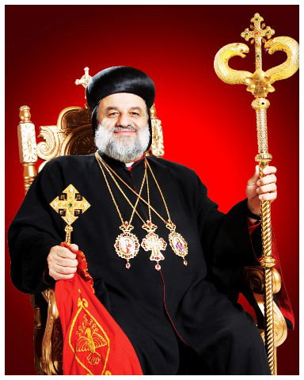
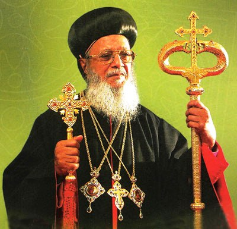
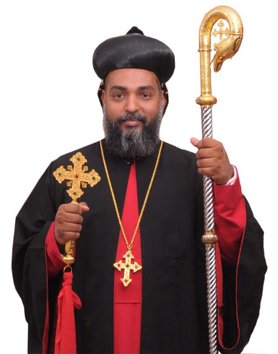

Hierarchy
Patriarch
His Holiness Moran Mor Ignatius Aphrem IIThe Supreme Head of universal Syrian Orthodox Church & 123rd successor of St.Peter in the Apostolic See of Antioch
On March 21, 2014, Patriarch Ignatius Zakka I Iwas died after a long illness. Following his death, the Holy Synod of the Syriac Orthodox Church of Antioch was convened to elect a successor. The synod was held at St Jacob Baradeus Monastery in Atchaneh, Lebanon, presided over by Mor Baselios Thomas I Catholicos of India and Mor Severius Jamil Hawa Archbishop of Baghdad and Basra and Patriarchal Locum Tenens. The synod elected Cyril Aphrem Karim to be the 123rd successor of St. Peter in the Apostolic See of Antioch. He was enthroned on May 29, 2014, at St Ephrem's Monastery, Maarat Saidnaya, near Damascus, Syria. Baselios Thomas I oversaw the ceremony.
Karim took the patriarchal name Ignatius, replacing his episcopal name Cyril, and, being the second patriarch to bear the monastic name Aphrem (the first being Ignatius Aphrem I Barsoum), his name became Ignatius Aphrem II. Unlike his immediate predecessors, but following older convention, Aphrem II chose not to use his family name, Karim, in his official title.
Catholicos
His Beatitude Aboon Mor Baselios Thomas ICatholicos of the East & Metropolitan Trustee
Catholicos Baselios Thomas I (July 22, 1929) is Maphriyono/Catholicos of the Syriac Orthodox Church and the regional head of Malankara Syriac Orthodox Church. His official title is Catholicos of India although sometimes called Catholicos of the East. It was on 26 July 2002 he was enthroned as the Catholicos and the head of the Church in India. He is the regional head of the 1.2 million Syriac Christians of India, a Christian community believed to have been established by Apostle St. Thomas in a place called Maliyankara, near North Paravur in South India in AD. 52.
Metropolitan
His Grace Zacharias Mor PhiloxenosPatriarchal Vicar of Malankara Churches in UK and Metropolitan of Malabar Diocese
H.G. Zacharias Mor Philoxenos was born in Kumarakom, Kottayam, Kerala in 1972. He was brought up in the Syriac Orthodox faith since his childhood. He passed his SSLC exams with first class and joined St.Marys College Manarcad Kottayam for Pre Degree Course, as of 2013 Philoxinos was the chief Patron of Marian Alumni The Old Students Association of St.Marys College Manarcad, Baselious College, Kottayam where he did his B.A. in English literature.
Mor Philoxenos was ordained a deacon in 1998 by Geevarghese Mor Gregorios (Perumpally Thirumeni) and a priest in 2000 by Thomas Mor Themotheose Metropolitan. After his ordination, he served various parishes in Kottayam Diocese. As well as he is the spiritual leader of all spiritual organisations of the Jacobite Church.